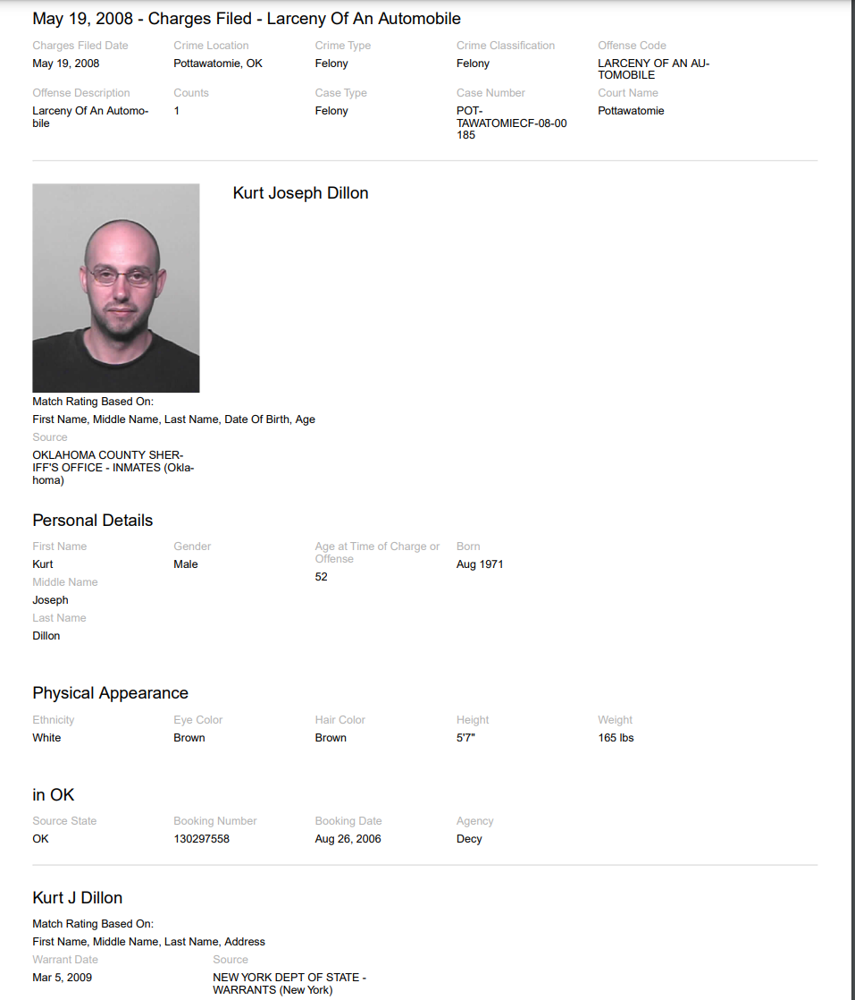
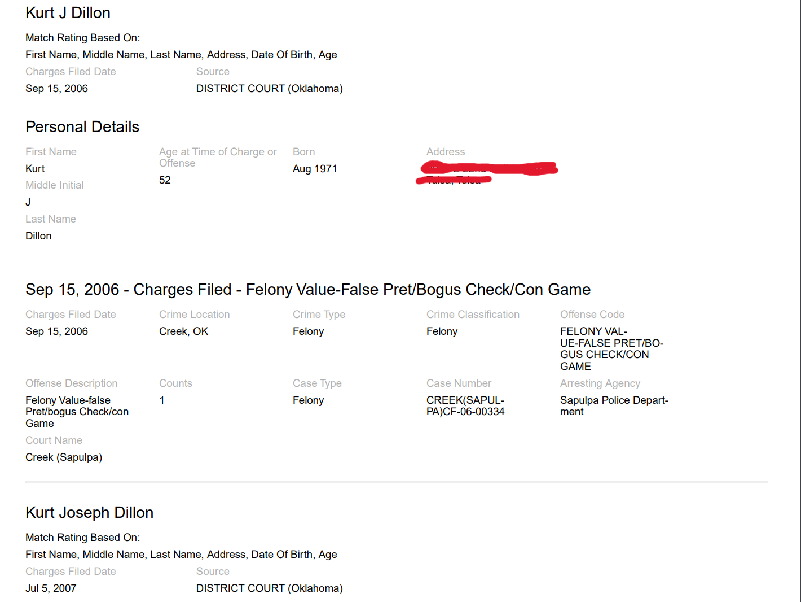
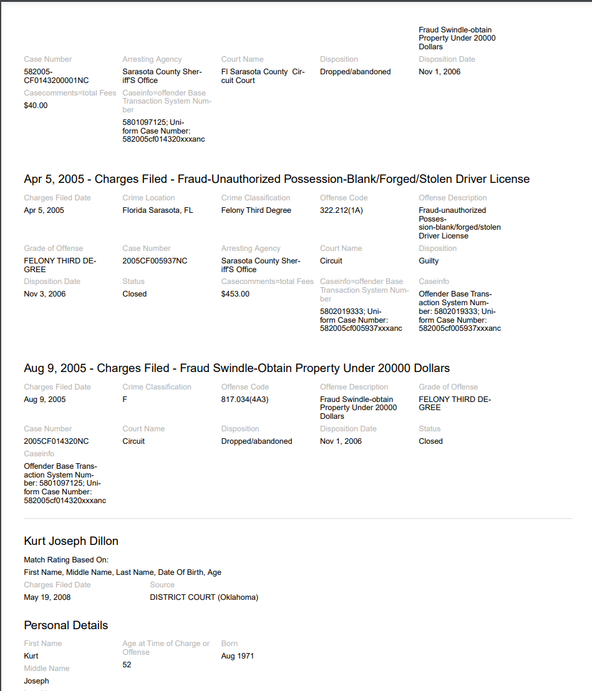
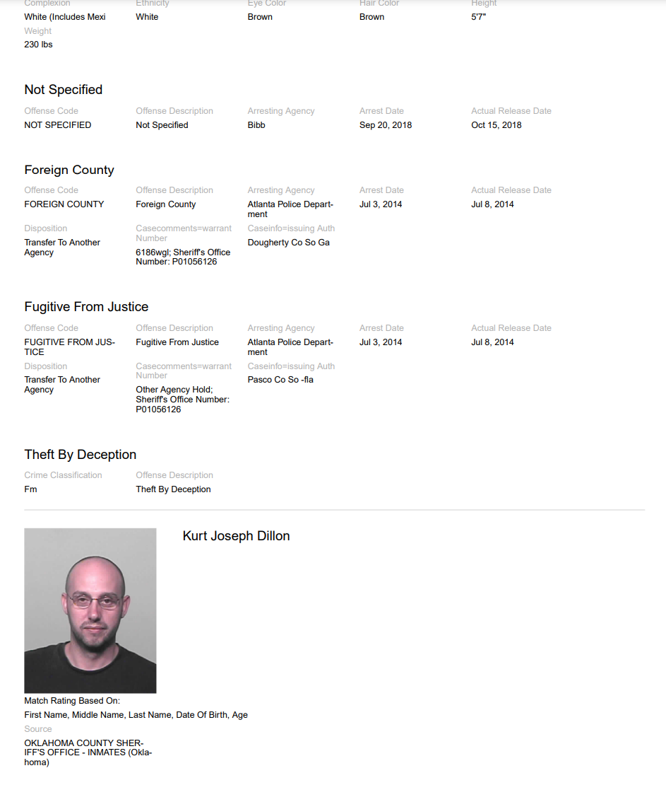
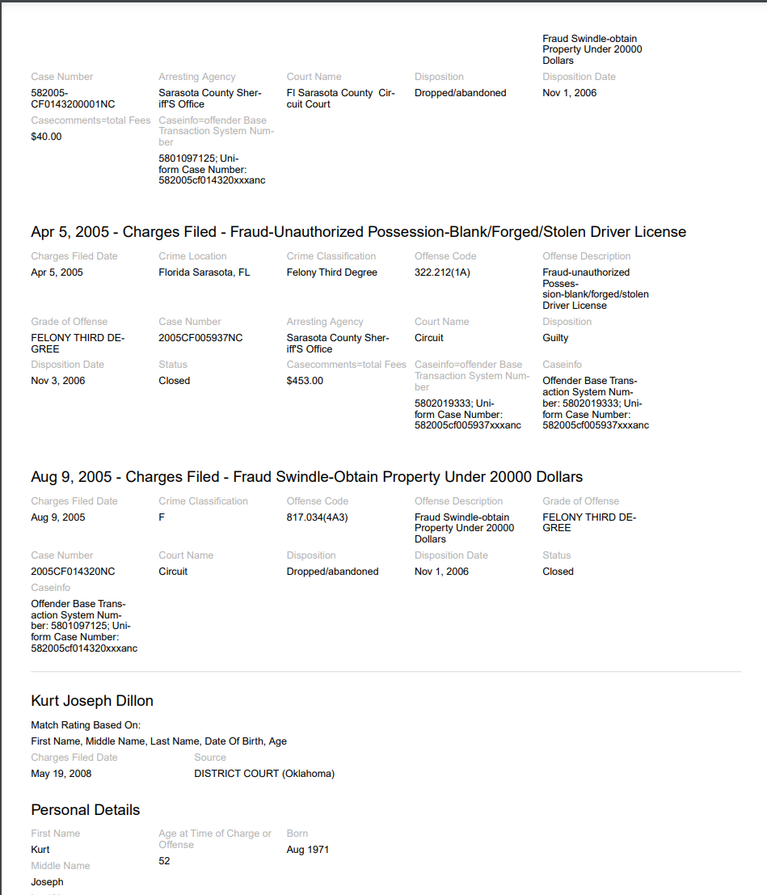
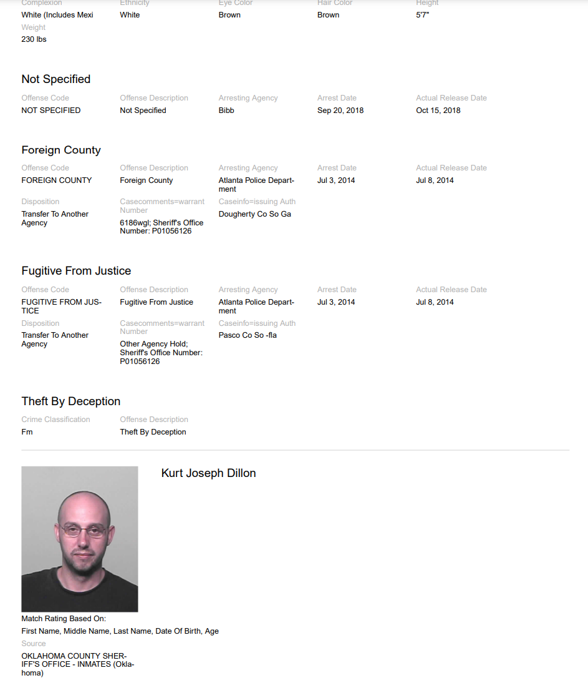
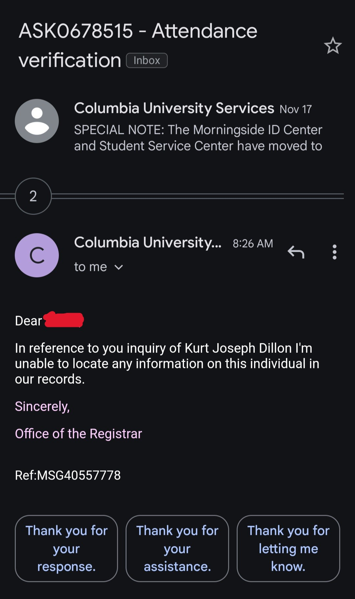

I created this website to honor Kurt Dillon and all his accolades
Kurt enjoys publishing true crime podcasts and writing about crime. He has eight children. He claims to be a retired major from the military and to possess multiple master's degrees. He is an editor for Illumination who attempts to filter out most ideologies that are not aligned with his far-right own.
Upon researching his LinkedIn, Facebook, Instagram, and Medium profiles, I can find no such evidence of any military affiliation or work as an English instructor with thirty-plus years of experience. That is not because he fails to share personal information or photos of his work endeavors and family without limiting the public audience, but because no such photos or affiliations exist.
He does, however, have photos of himself committing real estate fraud in an attempt to look professional.
I also took it upon myself to research his criminal background, and what I found was multiple felonies in public records. I found multiple convictions from many different states, and multiple evictions from many different residences across the United States. Here is a link to one such fraud case: US-V-Dillon
Here are some screenshots of some of his past crimes I pulled from a deep search. I was sure to check the case numbers in state registries as well.
 
 



On his LinkedIn account, he claims to have two master's degrees but fails to mention his status as a retired major in the military. I have requested verification from the National Personnel Records Center for verification of Kurt Joseph Dillon’s time in service. Although he never mentions which branch he served in on any social platform, I took a guess with other information upon making the records request. I do not expect them to get back with my request with any substantial information.
On his Facebook, he mentions he is a retired Major, but makes no mention of degrees, so again there is a disparity. On his Twitter account, he shares quotes along the lines of, “In honor of the Friday the 13th Jihad tomorrow, I will be loading my 45 and my 9mm with rounds coated with pork chop grease. Come get some.” On his Podcasts, he enjoys trying to disprove fact-check websites such as Snopes.com. His far-right mannerisms are easy to detect for anyone who has been alive for a couple of days.Being a high-ranking military officer comes with news and political coverage. It is a prestigious position, and there is at least an inkling of information on such a military career. Yet, I guarantee there exists no news coverage or any evidence of military affiliation, and if there were, he would be the poorest representation of the US military.
As for his degrees, I emailed the school he claims to have graduated from. Columbia University does not have a record of him graduating with a Master of Science in English Language and Literature in 1997.
Dowling College does not exist anymore, as it closed down due to accreditation issues on August 31, 2016.
Kurt Joseph Dillon, aged 52, has extensive fraud charges spanning most of his adult life. He has moved from state to state breaking one law after another. It is no wonder he enjoys writing and talking about true crime and law, albeit, mediocrely.
Kurt Joseph Dillon also failed to pay child support for years on his eight different children: